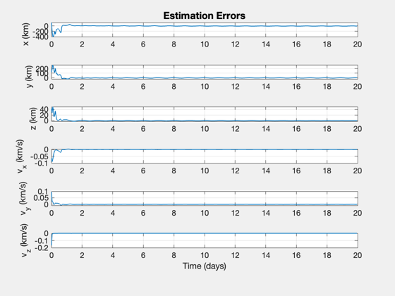

Demonstrate orbit estimation using a UKF and lunar landmark data.
The spacecraft is in a geosynchronous orbit. Uses the Hipparcos catalog.
------------------------------------------------------------------------- See also RaDec2U, Plot2D, TimeLabl, RK4, Unit, Date2JD, NavTargetTrackingLunar, OpticalNavLunarLandmarkStar, LoadCatalog, UKF, Planets, AngleOfView -------------------------------------------------------------------------
Contents
- Select the filter
- Measurement options
- Simulation parameters
- Allocate memory for plotting
- Earth gravitational parameter
- Initial Julian Date
- Star Catalog
- Initial state [r;v]
- Position and velocity uncertainty
- Measurement noise
- Landmark vectors
- State estimate at start
- Covariance based on the uncertainty
- Create a time sequence for the x-axis
- Plot
%-------------------------------------------------------------------------- % Copyright 2009-2010, 2014 Princeton Satellite Systems, Inc. % All rights reserved. %-------------------------------------------------------------------------- % Since version 9. %--------------------------------------------------------------------------
Select the filter
%------------------ filter = @UKF; % Full covariance matrix filter
Measurement options
%-------------------- planets = 1; % 1 or 2 starOffset = 8*pi/180; radiusMoon = 1738; fOV = 8.8*pi/180; fL = 200; pixel = 15e-3; % mm nPixels = 2048; rMoon = 405696 + 42167; % Maximum apogee angle = AngleOfView( fL, nPixels*pixel ); % half angle angleMoon = atan(radiusMoon/rMoon); % half angle pixelsMoon = 0.5*nPixels*angleMoon/angle; resolution = radiusMoon/pixelsMoon;
Simulation parameters
%---------------------- nSim = 24*20; dT = 3600; % sec tEnd = nSim*dT;
Allocate memory for plotting
%-----------------------------
xP = zeros(12,nSim);
Earth gravitational parameter
%----------------------------
mu = 3.98600436e5;
Initial Julian Date
%--------------------
jD0 = Date2JD( [2014 2 1 0 0 0] );
Star Catalog
%------------- starCatalog = LoadCatalog( 'Hipparcos', 7 ); uStar = RaDec2U( starCatalog.rA, starCatalog.dec );
Initial state [r;v]
%---------------------
r = 42167;
x = [r;0;0;0;sqrt(mu/r);0];
Position and velocity uncertainty
%---------------------------------- r1Sigma = 100; % km v1Sigma = 0.1; % km/s
Measurement noise
%------------------ noise.landmark = resolution/sqrt(12);% 30e-3; % 30 m noise.angle = 10*0.0000048481368111; % 1 arcsecond in radians noise.moon = 3e-5; % 3 cm
Landmark vectors
%----------------- rL = radiusMoon*Unit([1 0.5 0.3 0.5 0.8 0.2;... 0 0.5 0.3 0.8 0.2 0.1;... 0.5 0.5 0.5 0.5 0.5 0.5]);
State estimate at start
%------------------------
d.x = x + [r1Sigma*randn(3,1);v1Sigma*randn(3,1)];
Covariance based on the uncertainty
%------------------------------------ d.p = diag([r1Sigma^2*ones(1,3) v1Sigma^2*ones(1,3)]); d.int ='RK4'; d.rHSFun ='RHSOrbitUKF'; d.measFun ='OpticalNavLunarLandmarkStar'; d.integrator = @RK4; d.alpha = 0.8e-3; % UKF spread of sigma points d.kappa = 0; % UKF weighting factor d.beta = 2; % UKF incorporation of a priori knowledge d.dY = 12; d.dT = dT; d.rHSFunData = struct('mu',mu,'a',[0;0;0]); sigY = noise.angle*10*ones(1,12); d.rM = diag(sigY.^2); % Measurement noise covariance vecP = [0 0 0 1e-6 1e-6 1e-6]'; d.rP = diag(vecP.^2); % Plant noise covariance d = filter('initialize', d ); t = 0; [g.u, g.rL] = NavTargetTrackingLunar( x, uStar, rL, jD0, fOV ); g.jD = jD0; y = OpticalNavLunarLandmarkStar( x, g ); for k = 1:nSim % Plotting %--------- xP(:,k) = [d.x; x]; % Update the RHS %--------------- x = RK4( d.rHSFun, x, dT, t, d.rHSFunData ) + vecP.*randn(6,1); t = t + dT; jD = jD0 + t/86400; g.jD = jD; [g.u, g.rL] = NavTargetTrackingLunar( x, uStar, rL, jD, fOV ); y = OpticalNavLunarLandmarkStar( x, g, noise ); d.measFunData = g; % Kalman Filter %-------------- d.t = t; d = filter( 'update', d, y ); end
Create a time sequence for the x-axis
%--------------------------------------
[t,tL] = TimeLabl((0:(nSim-1))*dT);
Plot
%----- err = xP(1:6,:) - xP(7:12,:); yL = {'x (km)' 'y (km)' 'z (km)' 'v_x (km/s)' 'v_y (km/s)' 'v_z (km/s)'}; Plot2D( t, err, tL, yL, 'Estimation Errors' ); meanError = mean(abs(err(1:3,0.5*nSim:end)),2); DispWithTitle(meanError,'Mean Error'); %-------------------------------------- % $Date$ % $Id: f2ffeac3a13d4f75b0b7cae0f44a24ccc61eea50 $
Mean Error
3.4143
3.514
0.28237
